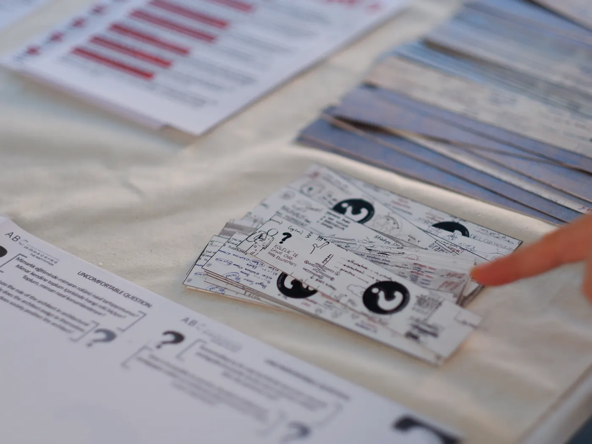

Konferans, Atölye
Situated Architectural Pedagogies of Co-making / Becoming
SARPE Network 'Situated Architectural Pedagogies of Co-making/Becoming' etkinliğine katıldık.
yaklaşan Bu etkinlik henüz olmadı. Sayfada fotoğraf, video ve etkinlik yazısı yerine afiş ve katılım bilgisi var.

- Tarih
- Saat
- Excel'de saat sütunu yok — eklenecek
- Yer
- İstanbul Teknik Üniversitesi · İstanbul
- Tür
- Konferans / Atölye
@sarpe_network projesi kapsamında düzenlenen “Situated Architectural Pedagogies of Co-making /- becoming” etkinliği kapsamında 18-21 Eylül tarihleri arasında İstanbul’daydık. Mimarlıkta kolektif yapma biçimlerini birlikte tartıştığımız, kendi yöntemimizi paylaşma fırsatı bulduğumuz ve yeni pedagojik yaklaşımları birbirimizden öğrendiğimiz bu buluşma için @storiesofsituatedpedagogies düzenleyicilerine ve tüm katılımcı ekibe teşekkür ederiz.
- Tür
- Konferans, Atölye
Etkinlik geçince bu sayfa silinmiyor. Aynı adres kalır: “yaklaşan” rozeti düşer, afişin altına fotoğraflar, video ve etkinlik yazısı girer — sayfa kendiliğinden arşiv kaydına döner. Duyuru ile arşiv kaydı iki ayrı sayfa değil, aynı sayfanın iki hali.
Örnekteki özet ve yazı arşivden geliyor, o yüzden geçmiş zamanda (“katıldık”). Gerçek duyuruda aynı sütunlar etkinlikten önce, gelecek zamanda yazılır.